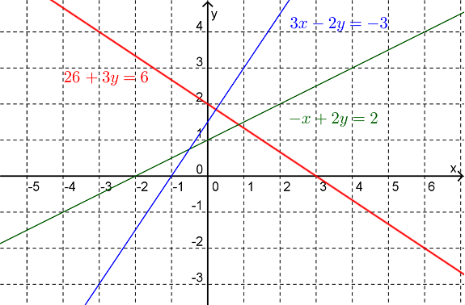
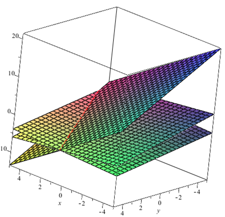
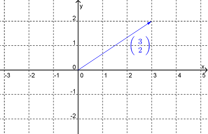
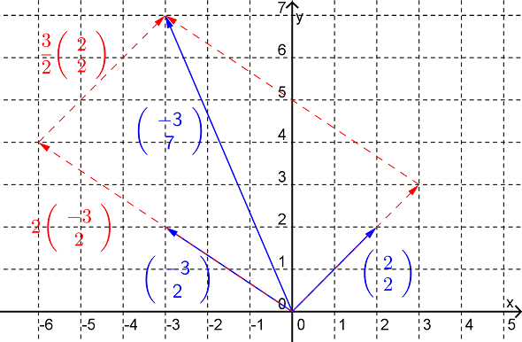
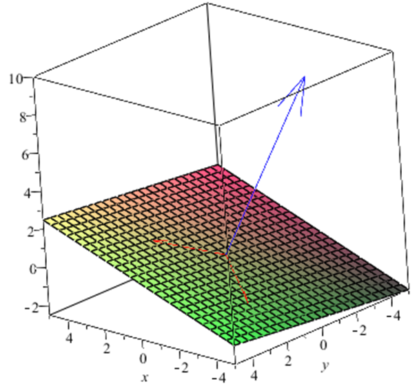
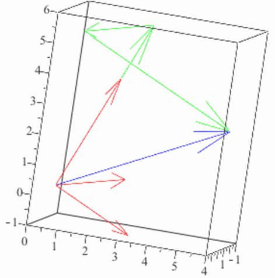
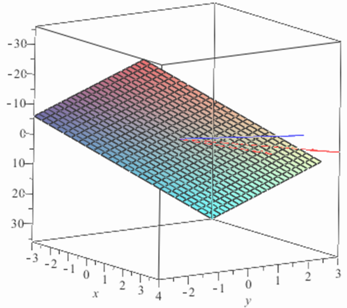

Chapter16LA2: Geometric Interpretations of Linear Equations
Section16.1Interpretation Via Rows
We know that a linear equation in two variables can be interpreted as the equation of a line in the plane. For example the equation
\begin{equation*}
2x+3y=6
\end{equation*}
can be interpreted as a line of slope \(-\frac{2}{3}\) and with a \(y\)-intercept of \(2\text{.}\) Thus, for a system of linear equations involving two variables each row can be interpreted as a line in the plane and finding the solution to this system can be thought of as finding all of those points in the plane (if any) that lie on all of the lines. (We had several examples last week where we interpreted systems involving just two linear equations this way.)
Example16.1.
Solve the following system of linear equations and interpret the result geometrically.
We can see from the reduced row-echelon form that this system of equations is inconsistent. The geometric interpretation of this is that there is no point in the plane that lies on all three lines, as can be seen in Figure 16.2.

Figure16.2.Plots of \(3x-2y=-3\) (blue), \(2x+3y=6\) (red) and \(-x+2y=2\) (green).
For systems of linear equations involving three unknowns each equation (or alternatively each row in the augmented matrix) can be thought of as representing a plane in \(\mathbb{R}^3\text{,}\) i.e. in three dimensions. Recall that the Cartesian equation of the plane that is normal to the vector \(\mathbf{n}=\langle a,b,c \rangle\) and passes through the point \((x_0,y_0,z_0)\) is
\begin{equation*}
ax+by+cz=k \textrm{ where } k=ax_0+by_0+cz_0
\end{equation*}
i.e. a linear equation in three variables. Thus the solution to a system of linear equations in \(3\) variables can be interpreted as those points in \(\mathbb{R}^3\) (if any) that lie on all of the planes in the system.
Example16.3.
Solve the following system of linear equations and interpret your answer geometrically (in terms of the rows).
i.e. the line passing through the point \((5,-4,0)\) and parallel to the vector \((1,-2,1)\)

Figure16.4.Intersection of planes.
A linear equation in more than \(n\) variables (where \(n\gt 3\)) is said to represent an “\(n\)-dimensional hyperplane”. The geometric interpretation (in terms of rows) of the solution to a system of linear equations involving such equations would be the set of \(n\)-dimensional points that lie on all of the hyperplanes. Obviously drawing pictures for such systems is not possible.
ExercisesExample Tasks
1.
What would you expect the reduced row-echelon form of the augmented matrix associated with the system of equations for \(4\) lines in space meeting a point to look like.
2.
Solve the following system of linear equations and interpret your answer geometrically (in terms of the rows).
What form would you expect the reduced row-echelon form of the augmented matrix associated with the system of equations for \(3\) distinct parallel planes to take.
Section16.2Interpretation Via Columns
Consider (initially at least) a system of two linear equations in two unknowns \(x\) and \(y\)
as representing the vector in \(\mathbb{R}^2\) (i.e. in the plane) whose tail is at the origin and whose head is at the point \((v_1,v_2)\text{.}\) Thus this matrix is sometimes called a column vector.
Example16.5.
The vector represented by \(\begin{pmatrix} 3 \\ 2 \end{pmatrix} \) is sketched in Figure 16.6.

Figure16.6.Sketch of the vector \(\begin{pmatrix} 3 \\ 2 \end{pmatrix} \text{.}\)
Now, the system of linear equations given above can be written as
Remember that when written in this form, the \(+\) sign means vector addition and \(x\mathbf{a_1}\text{,}\) for example, means the scalar multiplication of the vector \(\mathbf{a_1}\) by the scalar \(x\text{.}\) So solving this system of linear equations can be interpreted as finding scalars \(x\) and \(y\) such that the vector \(\mathbf{b}\) can be written in terms of the vectors \(\mathbf{a_1}\) and \(\mathbf{a_2}\text{.}\)
Example16.7.
Solve the following system of linear equations and interpret your answer geometrically in terms of the columns of the augmented matrix.
Thus the solution is \((x,y)=\left(\frac{3}{2},2 \right)\text{.}\) Geometrically we can interpret this solution as saying the vector \(\begin{pmatrix} -3 \\ 7 \end{pmatrix}\) can be written in terms of the vectors \(\begin{pmatrix} 2 \\ 2 \end{pmatrix}\) and \(\begin{pmatrix} -3 \\ 2 \end{pmatrix}\) via the expression
See Figure 16.8. Note that the solution is also saying that there is only one way in which \(\begin{pmatrix} -3 \\ 7 \end{pmatrix}\) can be written in terms of \(\begin{pmatrix} 2 \\ 2 \end{pmatrix}\) and \(\begin{pmatrix} -3 \\ 2 \end{pmatrix}\text{.}\)

Figure16.8.Sum of vectors
Before going on to consider systems of linear equations involving \(3\) (or more) variables it is convenient to introduce some new terminology.
Definition16.9.
The vector \(a_1\mathbf{v_1}+a_2\mathbf{v_2}+\dots a_n\mathbf{v_n}\text{,}\) where \(a_i\in \mathbb{R}\text{,}\) is said to be a linear combination of the vectors \(\mathbf{v_1}, \mathbf{v_2}, \dots, \mathbf{v_n}\text{.}\)
The set of all linear combinations of the set of vectors \(\{\mathbf{v_1}, \mathbf{v_2}, \dots, \mathbf{v_n}\}\) is said to be the span of that set of vectors.
Example16.10.(Example 16.7 cont.).
The geometric interpretation (in terms of the columns) of the system of linear equations
The vector \(\begin{pmatrix} -3 \\ 7 \end{pmatrix}\) can be written as a linear combination of the vectors \(\begin{pmatrix} 2 \\ 2 \end{pmatrix}\) and \(\begin{pmatrix} -3 \\ 2 \end{pmatrix}\text{,}\) and in only one way, or
The vector \(\begin{pmatrix} -3 \\ 7 \end{pmatrix}\) is in the span of the vectors \(\begin{pmatrix} 2 \\ 2 \end{pmatrix}\) and \(\begin{pmatrix} -3 \\ 2 \end{pmatrix}\text{.}\)
Example16.11.
Describe the span of the set of vectors \(\left \{\mathbf{v_1, v_2} \right \}=\left \{\begin{pmatrix} 2 \\ 2 \end{pmatrix}, \begin{pmatrix} -3 \\ 2 \end{pmatrix} \right \}\text{.}\)
Solution.
The span of the set \(\{\mathbf{v_1, v_2}\}\) is the set of vectors \(\mathbf{u}\) of the form
where \(x\) and \(y\) are scalars. From what we learnt about vectors in Math1110 we know that any vector in the plane will be able to be written as linear combination of these two vectors and hence the span of \(\{\mathbf{v_1, v_2}\}\) will be all vectors in \(\mathbb{R}^2\text{.}\) Alternatively, we could approach this problem algebraically. Let \(\mathbf{u}=\begin{pmatrix} a \\ b \end{pmatrix}\) be a vector in the span of \(\{\mathbf{v_1, v_2}\}\text{.}\) Then
\begin{equation*}
\begin{pmatrix} a \\ b \end{pmatrix}=x \begin{pmatrix} 2 \\ 2 \end{pmatrix}+y \begin{pmatrix} -3 \\ 2 \end{pmatrix}
\end{equation*}
and so the solution is \((x,y)=\left(\frac{a}{5}+\frac{3b}{10},\frac{b}{5}-\frac{a}{5}\right)\text{.}\) Thus, no matter which vector, \(\mathbf{u}\text{,}\) in \(\mathbb{R}^2\) we choose we can find the scalars so that \(\mathbf{u}\) is a linear combination of \(\mathbf{v_1}\) and \(\mathbf{v_2}\) and hence in the span of \(\{\mathbf{v_1, v_2}\}\text{.}\)
Example16.12.
Describe the span of the set of vectors \(\{\mathbf{v_1, v_2}\}=\left \{\begin{pmatrix} 2 \\ 2 \\ 1 \end{pmatrix}, \begin{pmatrix} -3 \\ 2 \\ -1 \end{pmatrix} \right \}\text{.}\)
Solution.
Firstly note that the vectors in this set are \(3\)-dimensional vectors and hence the vectors in the span will also be \(3\)-dimensional. Now, the span of the set \(\{\mathbf{v_1, v_2}\}\) is the set of vectors \(\mathbf{u}\) of the form
We recognise this as the vector equation of the plane through the origin and with direction vectors \(\mathbf{v_1}\) and \(\mathbf{v_2}\text{,}\) as shown in Figure 16.13.

Figure16.13.3D plot of the plane given by \(\mathbf{u}\) with normal vector shown in blue. Recall that the normal to this plane (shown in blue in Figure 16.13) is given by \(\mathbf{n=v_1\times v_2}\) and so here (using the column vector notation) is
The set of vectors \(\mathbf{\{v_1, v_2, \dots, v_n\}}\) is called linearly independent if no vector in the set can be written as a linear combination of the other vectors in the set, or equivalently if the only solution to homogeneous system of linear equations
is \(x_1=x_2=0\text{.}\) Note that in this case this is telling us that \(\mathbf{v_2}\) is not a scalar multiple of \(\mathbf{v_1}\text{,}\) i.e. \(\mathbf{v_2}\) is not parallel to \(\mathbf{v_1}\text{.}\)
We are now ready to discuss the geometric interpretation, in terms of the columns, of a system of three linear equations in three unknowns \(x\text{,}\)\(y\) and \(z\text{,}\) i.e. of
Thus, solving this system of linear equations can be interpreted as finding scalars \(x\text{,}\)\(y\) and \(z\) such that the vector \(\mathbf{b}\) can be written as a linear combination of the vectors \(\{\mathbf{a_1, a_2, a_3}\}\text{,}\) (or equivalently, that \(\mathbf{b}\) is in the span of \(\{\mathbf{a_1, a_2, a_3}\}\)).
Example16.16.
Solve the following system of linear equations and interpret your answer geometrically in terms of the columns of the augmented matrix.
Thus the solution is \((x,y,z)=\left(\frac{3}{2},-1,2 \right)\text{.}\) The geometric interpretation of this solution is that the vector \(\begin{pmatrix} 3 \\ 6 \\ 3 \end{pmatrix}\) (shown in blue in Figure 16.17) can be written as a linear combination of the vectors \(\left \{\begin{pmatrix} 2 \\ 2 \\ 4 \end{pmatrix}, \begin{pmatrix} 4 \\ 3 \\ 1 \end{pmatrix}, \begin{pmatrix} 2 \\ 3 \\ -1 \end{pmatrix} \right \}\) (shown in red in Figure 16.17) and in only one way, (shown in green in Figure 16.17).

Figure16.17.
Note that if the system of linear equations is homogeneous (i.e. \(\mathbf{b=0}\)) then the solution of the system tells us if the set of vectors \(\{\mathbf{a_1, a_2, a_3}\}\) is linearly independent or not.
Example16.18.
Solve the following system of linear equations and interpret your answer geometrically in terms of the columns of the augmented matrix.
Thus the solution is \((x,y,z)=(0,0,0)\text{.}\) The geometric interpretatifon of this solution is that the column vectors of the coefficient matrix are linearly independent, i.e. that no one of those vectors can be written in terms of the other two. If the column vectors had turned out to be linearly dependent then we could have written, for example,
This would imply that \(\mathbf{a_3}\) lies in the plane defined by the vectors \(\mathbf{a_1}\) and \(\mathbf{a_2}\text{,}\) or to say the same thing, that \(\mathbf{a_1}\text{,}\)\(\mathbf{a_2}\) and \(\mathbf{a_3}\) are coplanar. Since the vectors are linearly independent we can say these vectors are not coplanar. See Figure 16.19.

Figure16.19.
Example16.20.
Solve the following system of linear equations and interpret your answer geometrically in terms of the columns of the augmented matrix.
Then we can say that \(\mathbf{b}\) can be written as a linear combination of the vectors \(\{\mathbf{a_1, a_2, a_3}\}\) in an infinite number of ways. Notice that with \(t=0\) we have
Since \(\mathbf{b}\) can written as a linear combination of \(\{\mathbf{a_1, a_2}\}\text{,}\) the vectors \(\mathbf{b}\text{,}\)\(\mathbf{a_1}\) and \(\mathbf{a_2}\) are coplanar. Similarly (with \(t=-2\)) we can see that \(\mathbf{b}\text{,}\)\(\mathbf{a_1}\) and \(\mathbf{a_3}\) are coplanar. So, in fact, \(\mathbf{b}\text{,}\)\(\mathbf{a_1}\text{,}\)\(\mathbf{a_2}\) and \(\mathbf{a_3}\) are all coplanar.
Finally we can see from the above working that the vectors \(\{\mathbf{a_1, a_2, a_3}\}\) are linearly dependent since if \(\mathbf{b=0}\) then the reduced row-echelon form would be